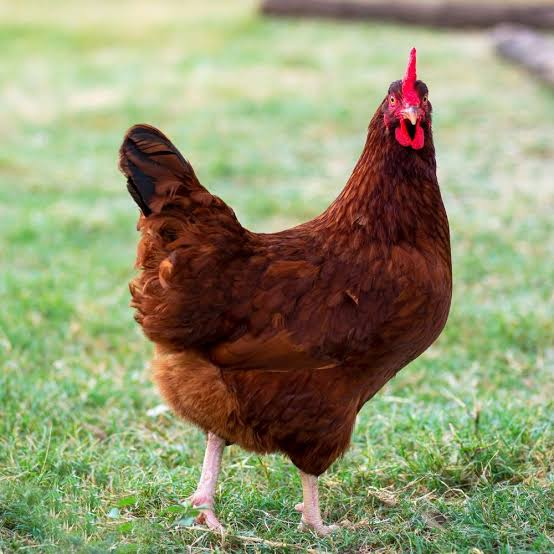
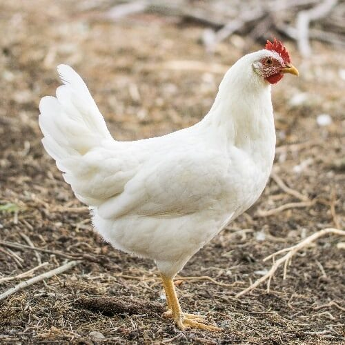
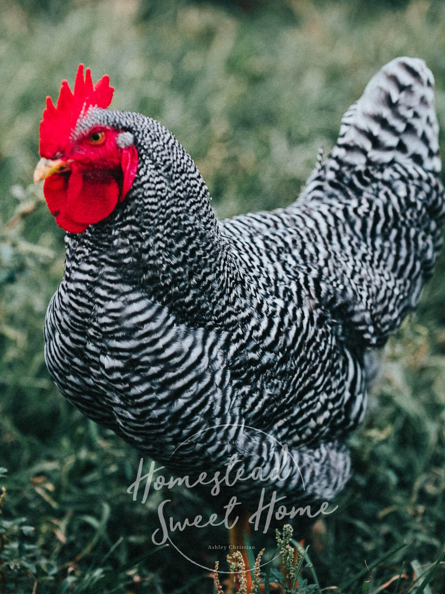
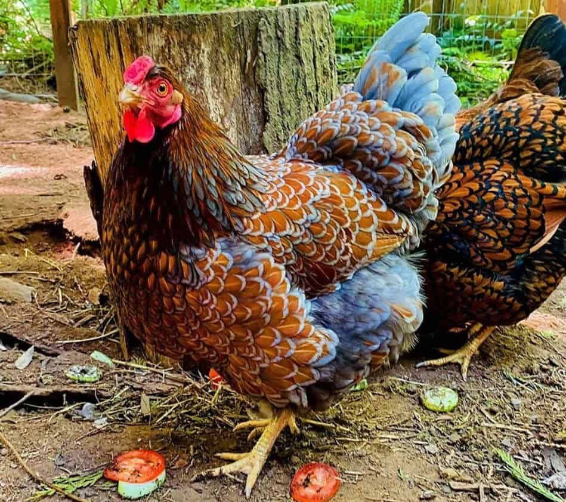

Popular Chicken Breeds
Here are some popular chicken breeds:
1. The Rhode Island Red is a popular dual-purpose breed known for its excellent egg production and meat quality.
2. The Leghorn Chicken is primarily known for egg production, Leghorns are prolific layers, producing large white eggs consistently.
3. The Plymouth Rock Chicken Red is a Dual-purpose breed favored for both egg laying and meat production.
4. The Wyandotte Chicken is a Dual-purpose breed known for its balance of egg laying and meat qualities.
